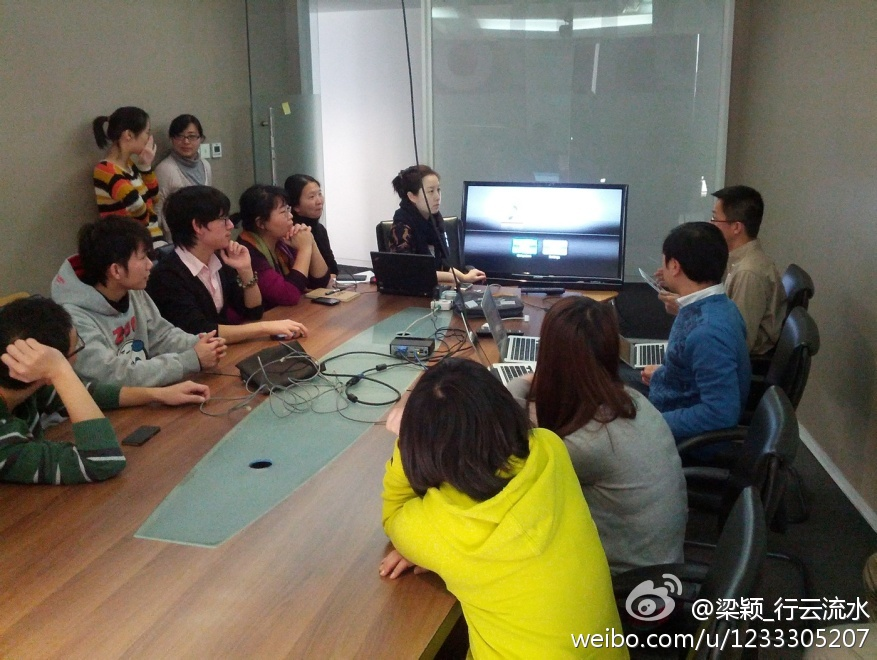

<管理3.0：培养和提升敏捷领导力>这本书，张瑞敏做序的标题是:"让每个人成为自己的CEO". 这样的话估计也就是在东方文化里会这么煞有介事地强调。在美国的妹妹说，儿子Arthur上幼儿园第一天，学到的内容就是: I am my boss.
正在找一个性价比高的设备，好把家里的大屏幕电视变成电脑或平板。 - 从目前的互联网发展情况来看，智能电视已成为一个不可逆转的趋势，极有可能像当初的平板一样，抢占大量市场，既有可能为目前的赢家提供新的护城河，又有可能对市场进行再次分割，... 网页链接
之前针对驴友团的领队角色，刚写过一篇“社区里的志愿者与专业人员 ”网页链接 我当时的看法是，我会更愿意选择带有商业诉求的专业组织者。但商业的lvye.cn频频出事，而公益的非营利的lvye.org中的领队却相对专业，这是怎么一回事呢？难道急功近利的商业就是会侵蚀专业吗？@我是壁虎先森:“杀人于无形的除了坏气候，还有什么？”——灵山山难，不得不说的。关于户外、关于绿野、关于领队，关于不该陨落的那些生命。@北京厨子 @北京天文馆詹想 @十一郞 @Vihike @驴友圈 @Oo骑行侠oO @小菲好同学 @辽宁-驴行天涯 网页链接
今天的CSDN午餐会上，@CSDN李涛 演示了MacBook, iPad通过Apple TV, 把液晶显示器变成电脑和平板的终端。@CSDN闫辉 带来了基于Adroid的高清播放器，但传统的电视遥控器和平板或手机做遥控端相比，弱爆了。但是，当我想买个AppleTV时，有人提醒，用iPad当遥控器，代价有些高。
Apple TV, 必须是苹果粉，麻烦；Android TV, 品牌太杂，无从选择，遥控器超男用；Sumsung Smart TV, 流播放不给力啊，等@云计算大梅 的云电视试用报道。[呵呵]@梁颖_木水辰:CSDN社区运营午餐会第3期–“大家一起玩TV” ：今天两大数码粉丝 @CSDN李涛 @CSDN闫辉 介绍了用智能手机、Apple TV、Android TV和液晶电视，快速搭建属于你自己的迷你家庭影院。喜欢用手机看视频的同学们，有大屏幕可以用了。ichbinwasser的专栏 - 博客频道 - CSDN.NET 网页链接 @Ada李力 
//@可爸文波：俺家是airplay的重度用户，音乐(airport express + douban.fm)视频(apple tv + ipad)都用它，自从好声音结束后好像就没开过有线电视。airport express 可以把家里原有的音响系统利用起来，不用再买单独的airplay音箱，效果更是远超，再结合豆瓣电台和QQ音乐等在线音乐，利器@梁颖_木水辰:CSDN社区运营午餐会第3期–“大家一起玩TV” ：今天两大数码粉丝 @CSDN李涛 @CSDN闫辉 介绍了用智能手机、Apple TV、Android TV和液晶电视，快速搭建属于你自己的迷你家庭影院。喜欢用手机看视频的同学们，有大屏幕可以用了。ichbinwasser的专栏 - 博客频道 - CSDN.NET 网页链接 @Ada李力
好主意，可以列入活动日程。 //@邓侃:可以搞个公开课吗？相信对此感兴趣的朋友一定很多。 //@CSDN李涛: #智能家庭# //@Ada李力: //@可爸文波：俺家是airplay的重度用户，音乐(airport express + douban.fm)视频(apple tv + ipad)都用它，自从好声音结束后好像就没开过有线电视。@梁颖_木水辰:CSDN社区运营午餐会第3期–“大家一起玩TV” ：今天两大数码粉丝 @CSDN李涛 @CSDN闫辉 介绍了用智能手机、Apple TV、Android TV和液晶电视，快速搭建属于你自己的迷你家庭影院。喜欢用手机看视频的同学们，有大屏幕可以用了。ichbinwasser的专栏 - 博客频道 - CSDN.NET 网页链接 @Ada李力
已经看到把USB端口，HDMI端口当电源的设备。 //@Pentera:现在头疼的问题是每个设备都要拖一根电源~ //@蒋涛CSDN: //@CSDN李涛:#智能家庭#@梁颖_木水辰:CSDN社区运营午餐会第3期–“大家一起玩TV” ：今天两大数码粉丝 @CSDN李涛 @CSDN闫辉 介绍了用智能手机、Apple TV、Android TV和液晶电视，快速搭建属于你自己的迷你家庭影院。喜欢用手机看视频的同学们，有大屏幕可以用了。ichbinwasser的专栏 - 博客频道 - CSDN.NET 网页链接 @Ada李力
这类主事儿的或者设计者的心态是：他们自己怎么方便怎么来。因为没有反馈机制，没有问责，他们不会去考虑服务对象的感受。//@刘松--甲骨文: 是这样的，而且很多处@朱龙春_小四科技:一张让所有北京人看了都想哭的图片 【转】